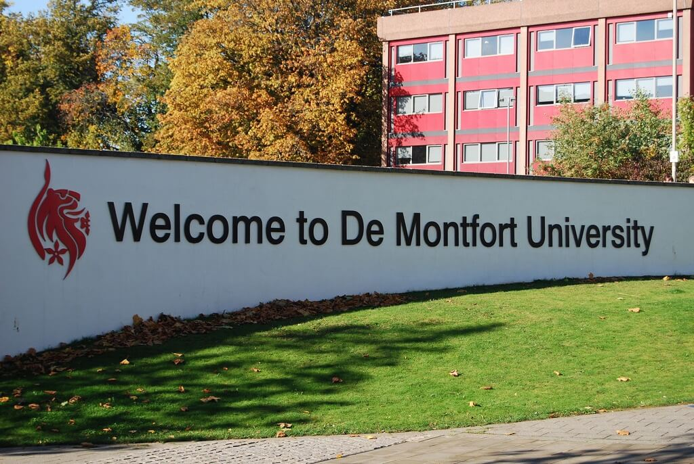

My name is Zoe Steward, I am 20 years old and I live in a small village called Murrow. I went to Neale-Wade Academy for my GCSE’s and my A-levels. When I first started my A-levels I was sitting A-Level Maths, Chemistry and Law, however although I thoroughly enjoyed Maths, the other subjects were not motivating me anymore and they wouldn’t head me in the right direction. After a lot of meetings and conversations I decided to restart the year with different subjects, I wanted to keep doing maths, but unfortunately it clashed with one of my other subjects. I had a much better 2 years at sixth-form once I had changed my courses to IT and Media diplomas. Restarting gave me a completely clean slate. I made loads of new friends and I came close to people I had lost contact with. Once I started looking at universities I was that nervous that I had to make sure everything was right. DMU was the first university I looked at for Media Production (2017) and I loved the course. I decided that it was the standard I would be comparing every other university to. I wasn’t 100% set on going to DMU yet because the city made me a bit nervous and I thought it might be too close to home. However all the other universities I was looking at were at least 4 hours away or was too expensive to live in (London). I decided around November time that DMU was the university I wanted to go to, so I applied with confidence that I was making the right choice, now it was just down to them for the offer. DMU was my first offer and I couldn’t have been happier to be on the course with some great people. I am now also a course rep, which I never would have done because of my lack of confidence, but being at university, although I have barely been here a month, I feel like a completely different person who has grown so much.

I try to give myself enough down time to keep myself relaxed